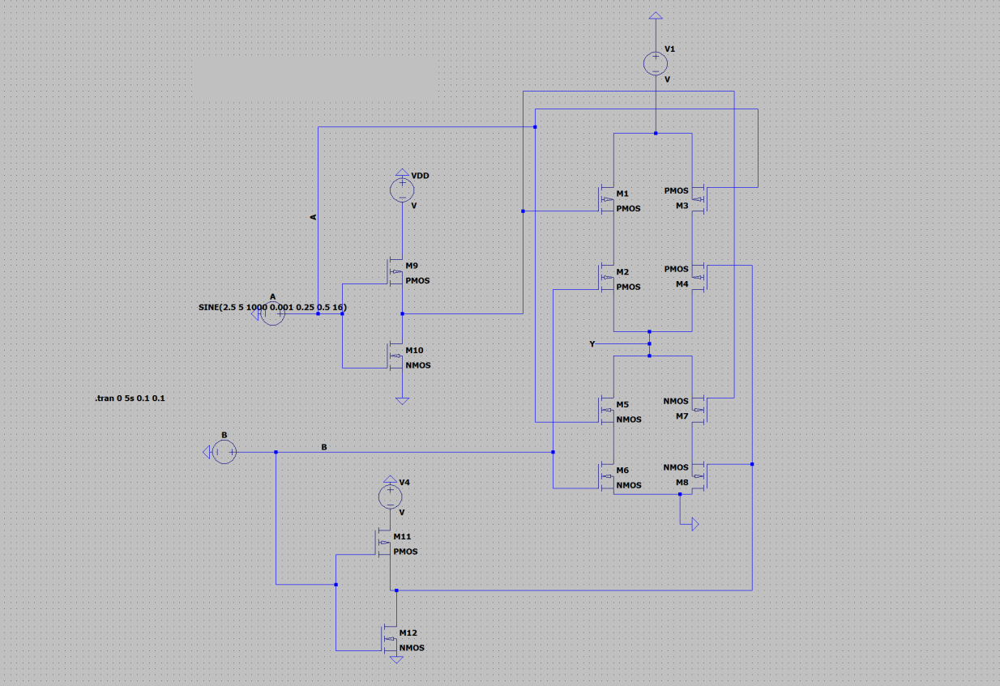
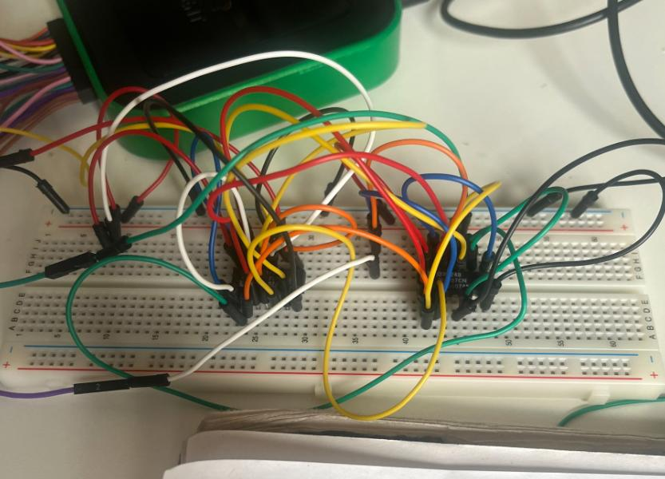
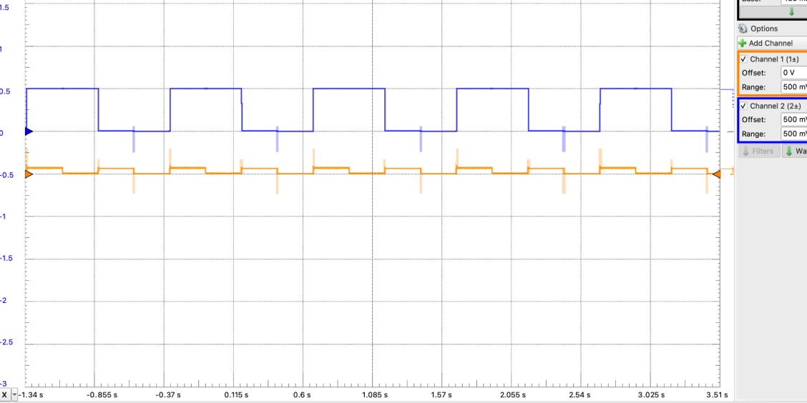

Project
CMOS XOR Gate
A 12-transistor CMOS XOR gate, designed, simulated, and built from discrete PMOS and NMOS transistors.
What I did
- Sized transistor ratios for ideal switching.
- Built the gate on a breadboard from discrete parts.
- Measured rise/fall time and propagation delay on the oscilloscope.
Result
Correct logic across all input combinations, despite the sizing constraints of real discrete parts.


